Validated Tools
ValidatedTools whose methods and outputs have been independently checked and verified against known references.
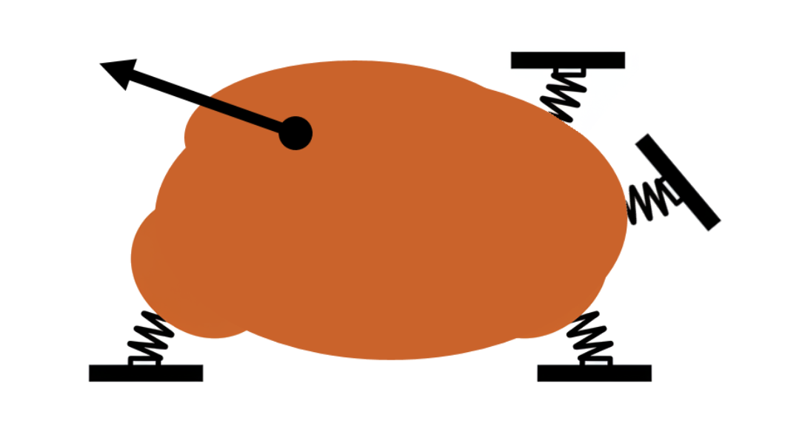
Rigid Body Analysis
3D rigid body with spring point supports and point loads.
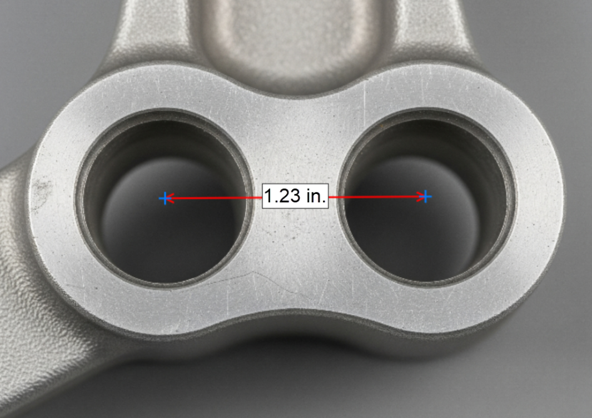
Image Measurement & Digitizer
Measure distances, find hole centers, and digitize (x, y) values from plots. Zoom and pan to place points precisely.
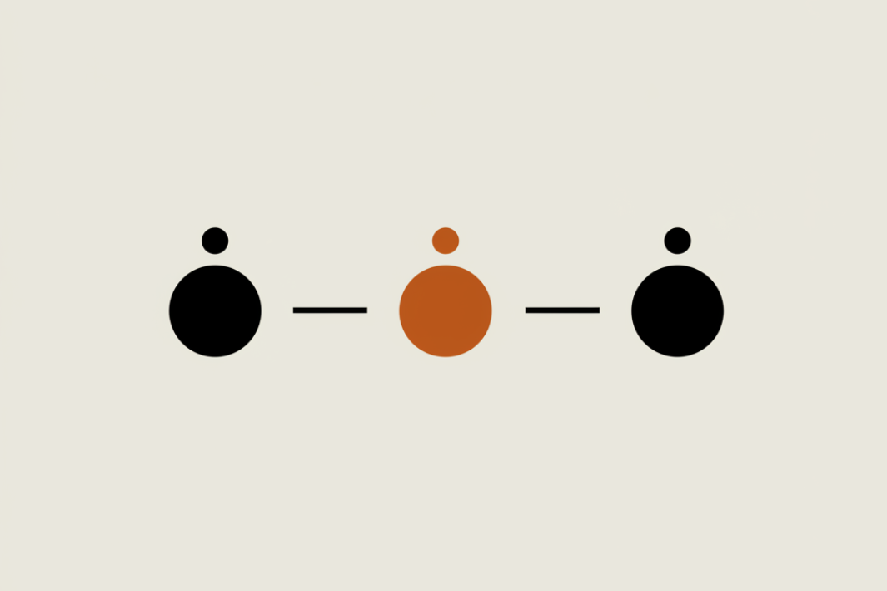
Interpolator
Linear and Log Interpolation in 1D and 2D data.
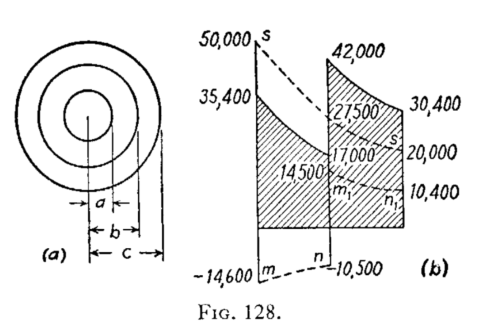
Freeze Plug Stresses
Calculate freeze plug interference stress and combine it with stress severity due to hole bearing and bypass tension
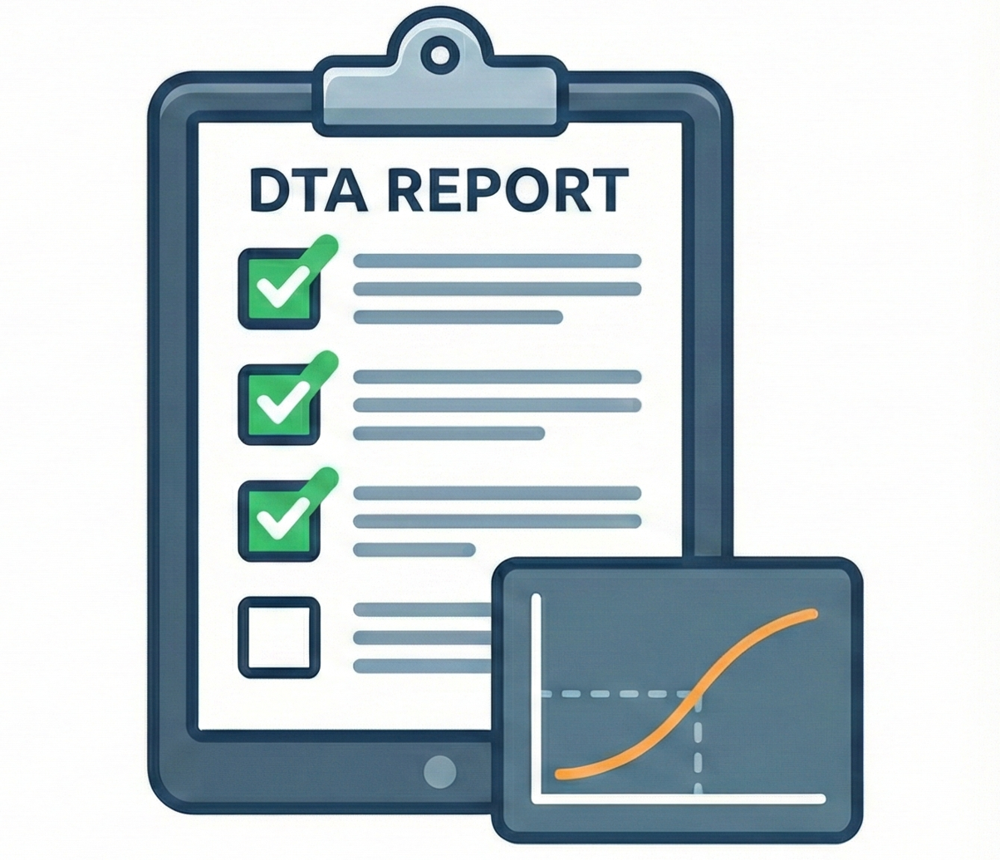
DT Analysis Checklist
A checklist tool for Damage Tolerance analysis compliance, following F&DT Manual standards.
FAA AD Tools
Search for ADs by aircraft type/model, or fetch a specific AD by number. Data sourced directly from the Federal Register.
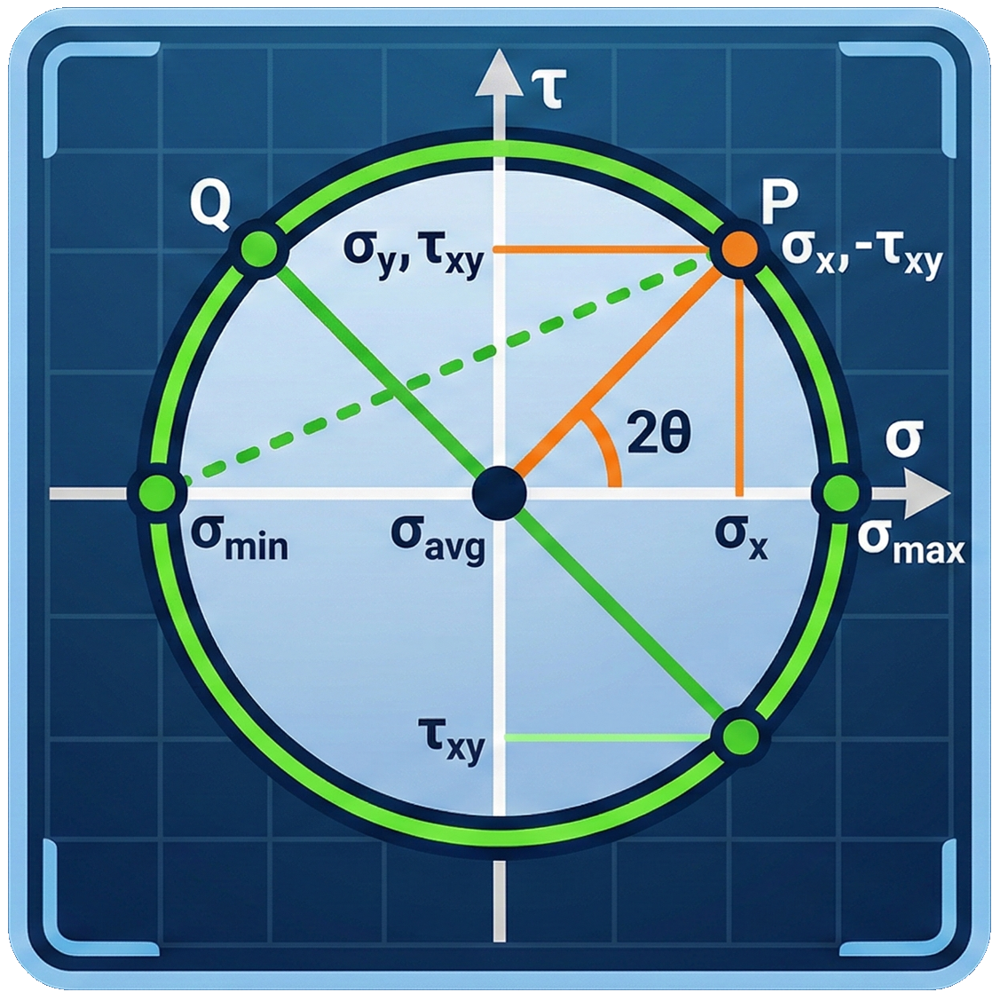
Stress Transformation
Calculate 2D stress transformation and 3D principal stresses with Mohr's circle visualization.
Unvalidated Tools
UnvalidatedThese tools are provided as a convenience and have not yet been independently verified. Results should be checked against hand calcs or known references before use.
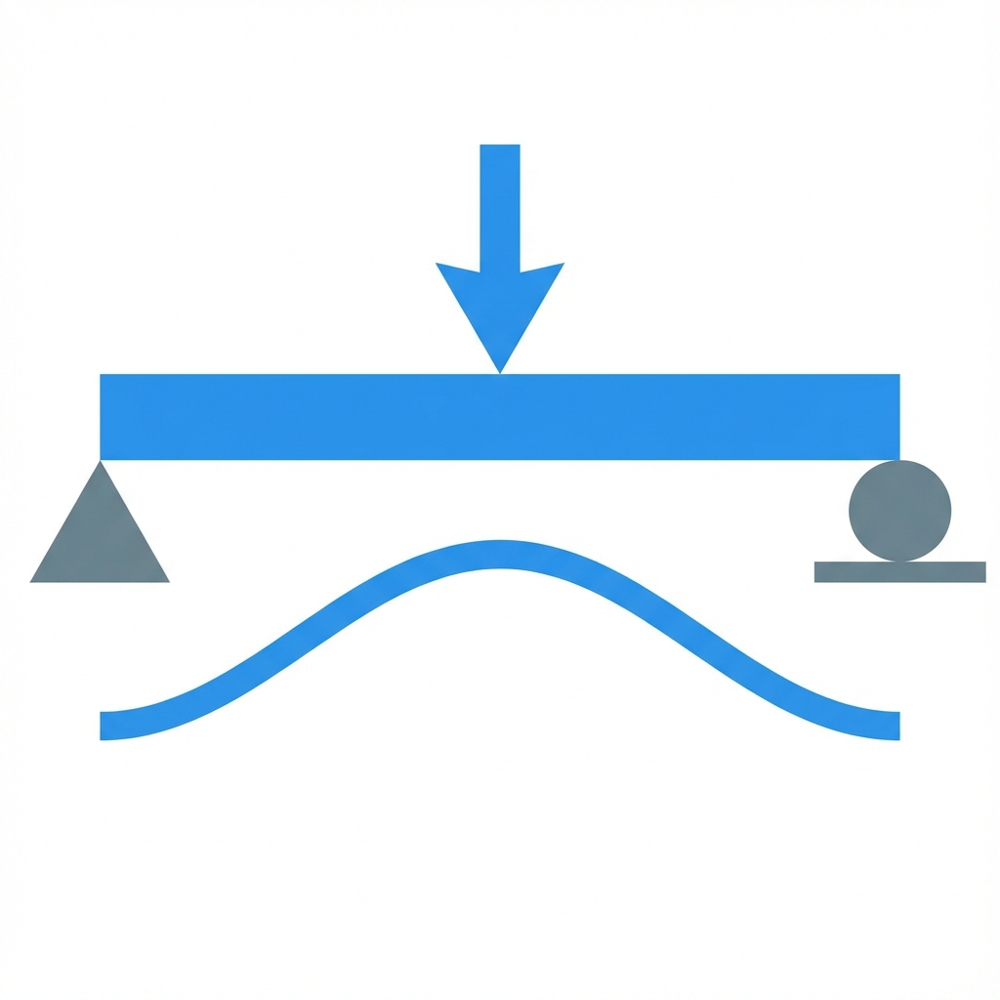
Beam Calculator
Multi-segment beam solver — arbitrary supports (including springs and settlements) and loads, with a Euler–Bernoulli / Timoshenko toggle.
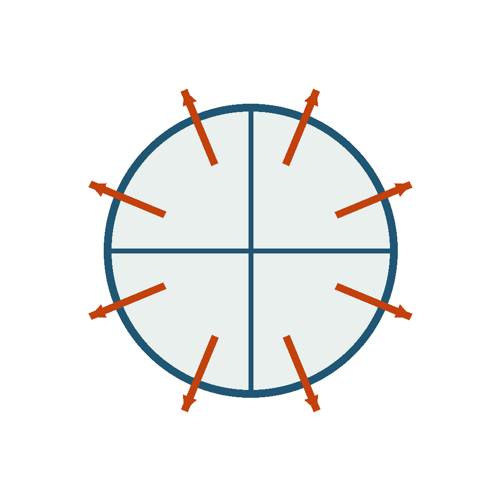
Fuselage Pressure & Shell Stresses
Cabin-pressure differential from max operating altitude (14 CFR 43 App. E), then skin / frame / stringer stresses by equilibrium and strain compatibility (RAPID bending).
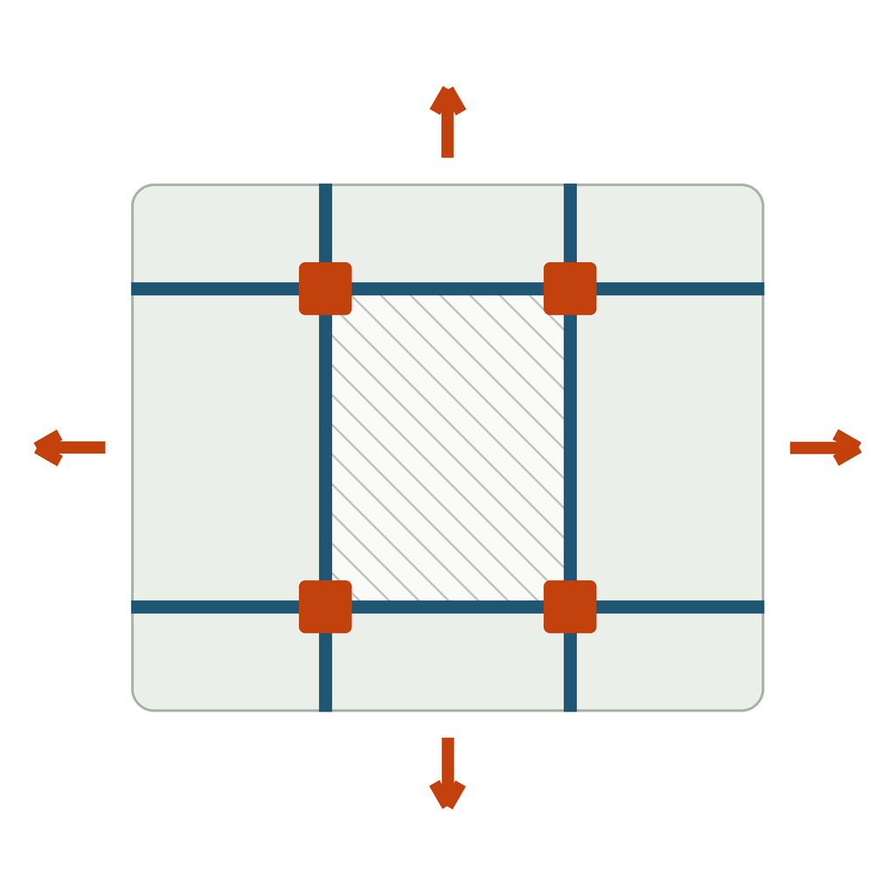
Fuselage Cut-out Loads
Load redistribution around a fuselage door cut-out — frames, sills and skin shear per Niu §6.5, for damage-tolerance analysis.
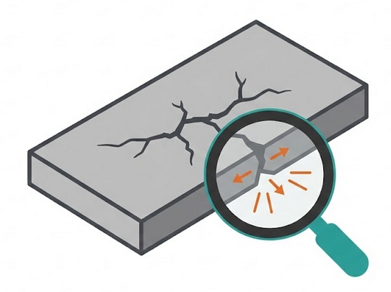
Crack Growth Analysis
Fatigue crack growth analysis tool using the NASGRO equation.
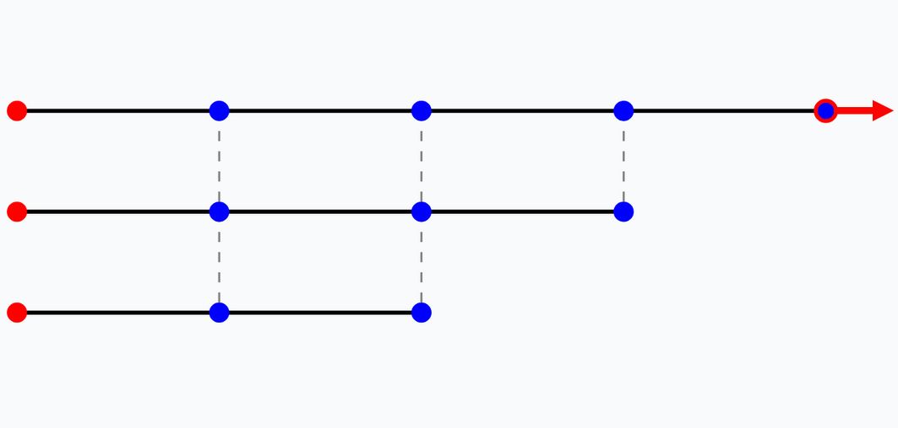
Load Transfer Analysis
Typical load transfer analysis, using Tate and Rosenfeld fastener stiffness.
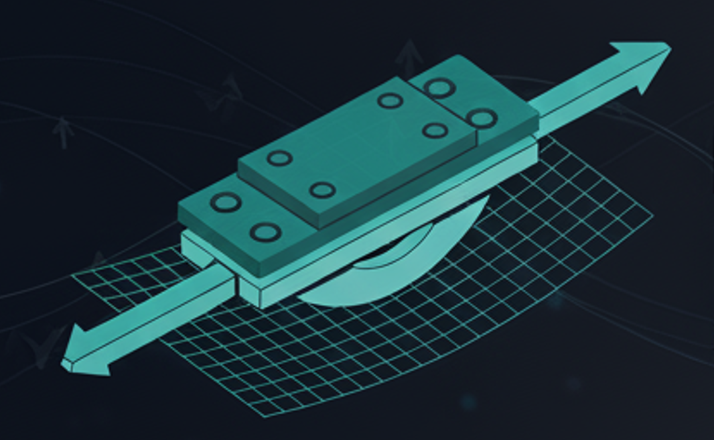
Secondary Bending Analysis
Calculate secondary bending effects using a nonlinear beam analysis. This currently doesn't have explanatory documentation (in progress).